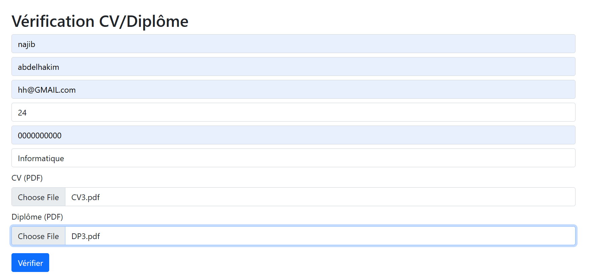
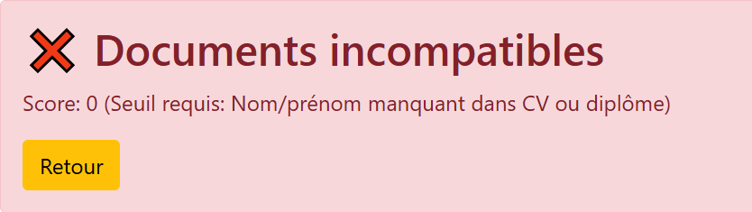
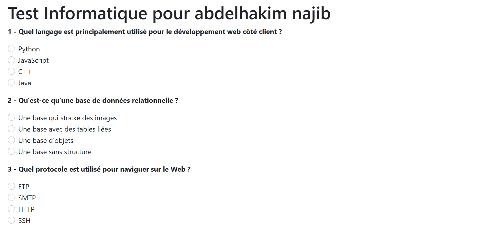
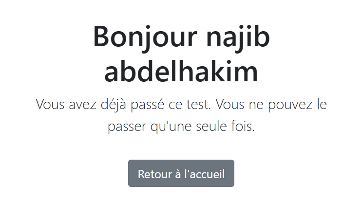
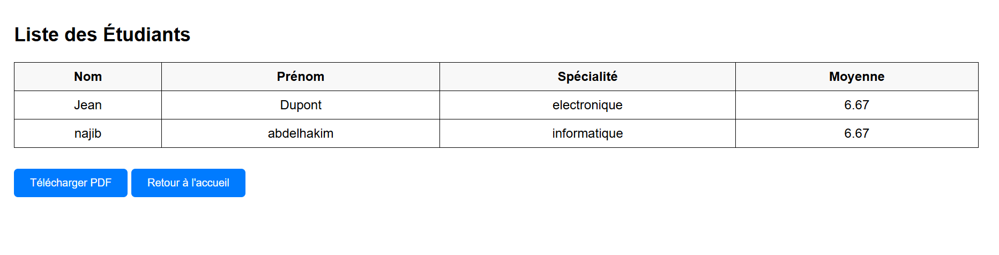
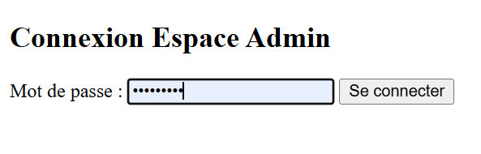

Contexte du projet
Ce projet vise à mettre en place une plateforme de gestion des étudiants, depuis leur inscription jusqu'à l'évaluation finale. Les candidats s'inscrivent en ligne avec vérification de leurs documents et sont automatiquement redirigés vers un test adapté à leur spécialité. Les résultats obtenus sont calculés, sauvegardés dans une base de données PostgreSQL et peuvent être consultés à l'écran ou exportés en PDF. Un espace administrateur est également prévu pour centraliser et analyser les performances des étudiants.
Notes de projet
- L'inscription des étudiants avec vérification des documents
- Lapassation de tests par spécialité
- Lasauvegarde des résultats en base de données
- Unespace admin pour visualiser les résultats
- L'export des résultats en PDF
Pages HTML de tests disponibles
- Etudiant en informatique : http://localhost:8000/test_informatique
- Etudiant en génie civil : http://localhost:8000/test_genie_civil
- Etudiant en management : http://localhost:8000/test_management
- Etudiant en médecine : http://localhost:8000/test_medecine
- Etudiant en électronique : http://localhost:8000/test_electronique
Déroulement du test
- Inscription via le formulaire avec spécialité choisie
- Redirection automatique vers la page HTML de test
- Remplissage et soumission du QCM en ligne
- Résultats calculés et sauvegardés dans PostgreSQL
- Consultation des résultats affichés `a l'écran
1.Page d'accueil
2.Page d'inscription

3.message d'error

4.Exemple Page de test

5.message de deja passe le test

6.base de données

7.Espace admin
